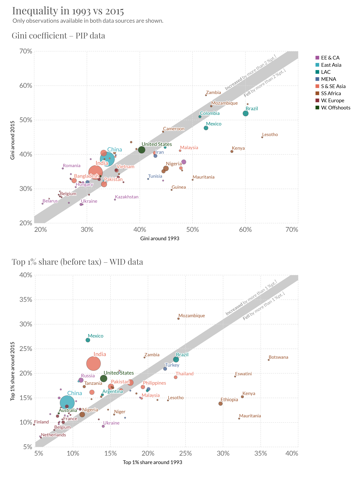
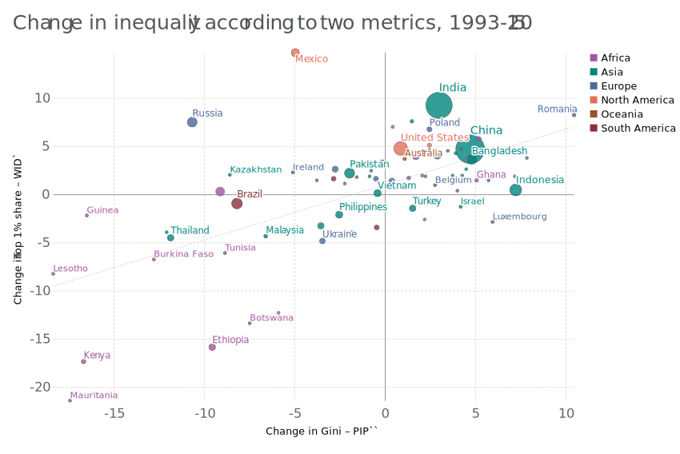

| PIP: Gini | WID: Top 1pc share – pretax | |||||||
|---|---|---|---|---|---|---|---|---|
| fall | stable | rise | total | fall | stable | rise | total | |
| region | ||||||||
| EE & CA | 6 | 2 | 9 | 17 | 3 | 2 | 13 | 18 |
| East Asia | 0 | 1 | 2 | 3 | 0 | 0 | 6 | 6 |
| LAC | 13 | 2 | 2 | 17 | 1 | 1 | 2 | 4 |
| MENA | 2 | 1 | 3 | 6 | 5 | 1 | 2 | 8 |
| Other N. America | nan | nan | nan | nan | nan | nan | nan | nan |
| Other Oceania | nan | nan | nan | nan | nan | nan | nan | nan |
| S & SE Asia | 4 | 1 | 5 | 10 | 3 | 2 | 6 | 11 |
| SS Africa | 14 | 1 | 8 | 23 | 12 | 2 | 8 | 22 |
| W. Europe | 4 | 5 | 7 | 16 | 1 | 2 | 15 | 18 |
| W. Offshoots | 0 | 1 | 2 | 3 | 0 | 0 | 4 | 4 |
| World | 43 | 14 | 38 | 95 | 25 | 10 | 56 | 91 |
Paper 1: Triangulating trends in inequality around the world from secondary databases
Introduction
Economic inequalities around the world are vast. The world’s richest 1% enjoy an average income that is around 150 times that of the poorer half of the world’s population (Chancel et al. 2021). While the richest may afford private flights to space, roughly three billion people are unable to afford even just the cost of a healthy diet (Herforth et al. 2020).
Such stark disparities have become an increasing focal point among policimakers, academics and the public alike, emphasised by the uneven impacts of the 2007-8 financial crisis, the COVID-19 pandemic, and recent jumps in inflation. “Inequality defines our time,” according to the UN Secretary-General.1
In addition to recent events, the increased attention paid to economic inequalities is surely owed in part to the increased availability of distributional data. New and expanded sources of data have shed new light on the extent of inequality around the world and how it is changing. This has enabled concerns about high or rising inequality to be voiced with more clarity and force. The supply and demand for global data on inequality have in this way been mutually reinforcing.
Two sources of data have been particularly impactful in this regard. One is the World Bank’s harmonized collection of household survey data, published online through its Poverty and Inequality Platform (PIP). Another is the World Inequality Database (WID), which emerged out of the burgeoning literature on top incomes th incorporation of tax data (A. B. Atkinson and Piketty 2014).
These two sources are the only regularly-updated databases providing global coverage of distributional data on a relatively comparable basis.2
Both have played substantial agenda-setting roles in academic research, policy and public debate. Their use and impact, however, has been confined to largely separate arenas, reflecting differences in the concepts of inequality they employ and the coverage they provide.
The PIP data has typically been the favoured choice for investigating the whole distribution of welfare across households, particularly at a global scale. () The WID data at the top, focus on role of capital incomes.
Moreover, the many methodological differences separating the two datasets prevent users combining the insights that they each offer individually into a coherent empirical view informed by both. In choosing datasets, we are simultaneously choosing underlying data source, methods, welfare concept, and coverage. The two datasets represent distinct and, to a large extent, incommensurable ‘worlds’ of inequality measurement.
This disconnect is all the more pertinent because they disagree on basics. Firstly. Secondly.
Very confusing terrain for people to understand. We don’t know which of the two worlds we live in. Depends on a choice about which little can be determined.
This paper is the first of two which will try to ocnnect them up.
Section 2. Section 3…
Two ‘worlds’ of inequality measurement
The two datasets differ along a range of dimensions, including the underlying sources relied on, the measures of welfare used, the summary indicators commonly favoured, and the temporal and geographic coverage available.
These differences come largely as a bundle. Choosing between the WID or PIP data implies not only a technical choice between data sources and methodolodies, but also a more fundamental choice as to which concept of inequality to consider, for which places and time periods. This has a led to a degree of specialisation in their use.
The PIP data has typically been the favoured choice for investigating the whole distribution of welfare across households, particularly at a global scale (Kanbur2022-lk?; Lakner and Milanovic 2016; Anand and Segal 2015; Milanovic 2015; Nino-Zarazua2017-tv?; Ravallion2014-mk?). This includes the World Bank’s own research and monitoring activties concerning global poverty, inequality and growth across the distribution (see for example World Bank 2016, 2022). The dataset is also relied on by the United Nations to set and monitor many of the targets in this area that form part of its Sustainable Development Goals.
The WID data has more commonly been used to understand top dynamics before taxes. Notwithstanding substantial efforts to global, high income countries due to the data required. in which today’s rich countries are overrepresented . In policy, advocacy and public debate, the data used to highlight the very large and, in many cases, growing advantage enjoyed by the richest individuals in these societies. In academia, top incomes data long-run processes fundamental – capital accumulation.(Anthony Barnes Atkinson and Piketty 2007; Piketty 2014) On political economy channels, social conflict between capital and labour, wage bargaining norms and the interaction with marginal tax rates. More generally the data have led to a fundamental revaluation of the causes of inequality that move beyond orthodox accounts given purely in terms of marginal productivities of workers with heterogeneous skills or education (Facundo Alvaredo et al. 2013; Piketty and Zucman 2014).
Thus whilst both the PIP and WID datasets have played substantial agenda-setting roles in academic research, policy and public debate, this has tended to occur in largely separate arenas. Moreoever, no way to join up the insights they offer. Very confusing terrain for people to understand. We are left with two distinct and, to a large extent, incommensurable ‘worlds’ of inequality measurement.
Recent extensions have brought down some of these barriers. PIP now includes high-income countries. WID now global coverage, and post-tax income concepts. In
At the same time, these developments in the two datasets have made this disconnect between them all the more apparent. Fundamental differences on the basics. Two in particular.
1 2
Whilst for individual countries, the connections may be well understood, globally the value of the different assumptions is not really known. We have to pick blindly.
Connecting up the worlds
This is the first of two papers that seeks to join up.
The dataset is used for the Bank’s own research and monitoring activities which, whilst traditionally focussing on absolute poverty, have more recently encompassed trends in inequality, relative poverty and growth across the distribution. Notably, the data is alo used to set and monitor many of the targets, on both poverty and inequality, that form part of the UN’s Sustainable Development Goals. More generally, the source has been indispensible for research taking a global view on inequality (Kanbur2022-lk?; Lakner and Milanovic 2016; Anand and Segal 2015; Milanovic 2015; Nino-Zarazua2017-tv?; Ravallion2014-mk?).
The WID database emerged out of the burgeoning literature on top incomes (A. B. Atkinson and Piketty 2014) and has come to play a central and, to some extent, coordinating role for this research agenda. The key innovation of the ‘top incomes’ approach has been the incorporation of tax data, as either an alternative or complement to the more orthodox reliance on household survey data. The primary advantage is that tax data can provide a better view of the top of the income distribution, which is often poorly captured by survey data (Lustig 2019). However, the choice of data source has typically brought with it a number of other differences that mark out the ‘top incomes’ approach. This includes a particular focus on the top of the distribution (for which tax data is more universally available), and on income measured before tax (in terms of which the underlying data is gathered). This contrasts with more orthodox approaches to inequality measurement in which disposable income has tended to be seen as the more relevant measure of welfare (Canberra Group 2011), and greater attention is given to measures of overall inequality, such as the Gini coefficient, or to relative poverty.
Another benefit of tax data is the much longer timeframes it is sometimes available for. The estimates gathered in WID provide a long-run perspective on the evolution of inequality over the twentieth century, albeit for a more limited geography in which today’s rich countries are somewhat overrepresented (Anthony Barnes Atkinson and Piketty 2007; Piketty 2014).
Moreover, the top incomes methodology carried forward by WID developed with a distinctive set of questions concerning the causes of inequality in mind. Particular attention is given to the distribution of wealth and capital incomes as drivers of personal income inequality, in contrast to orthodox accounts focussed purely on the dispersion of wages (Facundo Alvaredo et al. 2013; Piketty and Zucman 2014). This … hidden from view given the concentration of capital incomes at the top, captured poorly by survey data.
Two ‘worlds’ of inequality measurement
Tw worlds – methods, conceptions of inequality, time periods and geographic coverage and research questions come bundled.
Always unsatisfying. Very difficult to unpick. Peple do it for individual countries..
A wholeslae comparison was generally avoided due to the very different coverage. Used in parallel.
As the databases have developed and expanded, however, this division of labour between the two datasets has become increasingly blurred. PIP includes high-income countries. WID coverage is global. DINA focus on comparability. Increasingly, the datasets are used to answer the same range of questions, speak to the same world.
Where they now meet, the result is very confusing, one that, despite the great strides forward, leaves uncertainty around the most basic questions.
This is most visible in two fundamental disagreements between the two ‘worlds’.
Firstly, they give very different views of how ubiquitous a phenomenon rising inequality is within countries around the world. The view from World Inequality Database and its associated global report is that inequality has risen ‘nearly everywhere’ in recent decades (F. Alvaredo et al. 2018; Chancel et al. 2021). In contrast, the World Bank data and its associated biannual report offers a much more mixed picture – in which inequality is rising and falling in roughly equal numbers of countries.
Secondly, the datasets paint as to how such inequalities within countries compare to the differences in average incomes seen between richer and poorer countries.
Most analyses of global income inequality to date have relied heavily on the PIP data (Kanbur2022-lk?; Lakner and Milanovic 2016; Anand and Segal 2015; Milanovic 2015; Nino-Zarazua2017-tv?; Ravallion2014-mk?).3 [TODO: Check and more refs.]. A consistent result from this literature is that inequalities within countries remain small in comparison to the much larger differences seen between countries. This is despite the convergence seen in recent decades between countries, given higher economic growth rates across low- and middle-income countries. According to such research, a person’s income remains largely determined by the country in which they happen to have been born (Milanovic 2015).
More recent analysis of the WID data flips this established result on its head. Chancel… estimate xx.
The datasets are enormous efforts, involving the work of hundreds of researchers. They are hugely valuable offering an unprecidented perspective on global inequality and how it is evolving. And yet the disconnect between the two devalues them both. Amidst the wealth of data, basic facts are not known. And the terrain is incredibly confusing to navigate for policimakers and the concerned public.
Connecting up the worlds
This paper, along with a companion paper, seeks to join up these two worlds. This first paper picks up the first question – within country. A companion paper considers global inequality.
Section 2 of this paper introduces the two worlds. Section 3 compares within country trends between two periods. It begins with the inequlaity metrics for which these datasets are most associated, and in which the worlds fall furthest apart: Gini, Top 1% share. Already Section 4 aligns coverage. It is not neutral. Already this goes some way to explaining the gap between the two datasets. Section 5 aligns inequality indices. [Summary.] Section 5 considers the role of welfare metrics and specific data quality issues for a subset of countries where there is most disagreement.
Summary of main conclusion!?
2. Two worlds of inequality measurement
As well as being the the two not just two different databases. They in some sense represent two different worlds of inequality measurement.
Different methods. These yield different pictures of the extent of inequality and how it has changed over time. Motivated by different ideas about the salient factors shaping inequality.
PIP
WID
They differ as to how ubiquitous a phenomenon rising inequality is around the world. The view from World Inequality Database and its associated global report is that inequality is rising in ‘nearly everywhere’ (F. Alvaredo et al. 2018; Chancel et al. 2021).4 In contrast, the World Bank data and its biannual report offers a much more mixed picture – in which inequality is rising and falling in roughly equal numbers of countries.
Decompositions of global inequality into between- and within-country components.
Capital vs labour share. .– including fundamental laws of capitalism with regard to capital accumulation (Piketty) –
The disconnect between these datasets devaules them both
These datasets are incredibly valuable – playing to motivate action. The example in the opening sentence above illustrates this well. It is only thanks to the WID data that we can say X. It is only thanks to the PIP data that we can say that three billion cannot afford a healthy diet.
Often it is presented that there is a division of labour between these dataset – WID is for inequality, especially at the top.PIP is for poverty.
But the point is that it is only one world that we live in. The disconnect is not something we can live with, but rather presents a challenge to both datasets.
There remains fundamental ambiguity surrounding which of two possible worlds we live in.
The ‘WID world’ rising inequality within countries has been an almost universal phenomenon. suggests the winners from globalization and economic growth overwhelmingly have been a global elite. It sees the bulk of global inequalities as lying within nations, but emphasises global factors in terms of causes and hence the need for international coordination to combat inequality.
The ‘PIP world’ – within-country inequality trends in recent decades have been mixed, and the differences in average incomes between countries remain the lion’s share of the globally.As such the importance of national policy (Ravallion, 2018; Corlett, 2016). access to both produced and human capital.
Knowing which of these worlds we live in matters a great deal – for our understanding of inequality today, how it has changed, and also where efforts to combat inequality in the future are likely to be most successful.
Trouble is that these are all bundled up. You must chose. On what basis can you make a choice?
Known problems on both sides.
For PIP – top incomes, and lack of comparability of the survey data – notably mix of incme and consumption data.
For WID – tha many assumptions. An emphasis placed on the incorporation of tax data, but when taking a global view confonte by the fact that such tax data is often nonexistent. Top income corrections based on strong assumptions.
Given the presentation, the extent to which different assumptions, indices, methodological choices affects the data and – is not something that can be read off’ the data.
In using the datasets a global view on inequality, requires choosing wholesale between methodological ‘bundles’ whose relative strengths and weaknesses, applied globally, are not well understood.
Also makes for a very confusing terrain for policymakers, media and the public.
The two datasets are incredible efforts, involving the work of hundreds of researchers. Both datasets have continued to improve adn expand. In terms of data availability we are thus in a better position than ever to take a global viw on inequlity. And yet, amidst this wealth of data, limited understanding of very basics concerning inequality around the world.
Outline: Connecting the two worlds
(In this section I will explain the plan for the paper)
In this paper I aim to bring these two worlds of inequality measurement closer. To Triangulate what they do agree on and identify where they disagree.
The first, most obvious, step is simply to compare the in a systemtatic way. This very basic step is curiously lacking in the literature. We begin by comparing trends in each world based on the inequality indices most typical in each: the Gini coefficient for the PIP data, and the top 1% share of pre-tax income for WID.
Given incomplete coverage in both datasets, we ‘line up’ estimates to reference years to see change over time. We use two periods, presenting two different tradeoffs with respect to data coverage. The first is 1993-2018?? This maximises global coverage – 100 countries covering roughly 90% of the world poplation (Figure XX). The downside is that this period misses out – transition, liberalisation and structural adjustment. Question begging, by avoiding specifically the period where inequality thought to rise.
The second is 1980-2018. Here we lose coverage, especially in the PIP data (Figure XX).
The two measures selected – Gini coefficient of disposable income/consumption, and the top 1% share of pre-tax income – are where the PIP and WID worlds respectively are at their furthest apart. Yet in terms of broad global trends, there is much that even these very different measures can agree on: - x - y - z.
There are big differences though: - Somewhat more pronounced rise among advanced economies. - Big divergence in trend some of the most populous countries
Subsequent sections attempt to bridge the gaps in order to learn where those differences emerge.
Section 2: Aligning coverage. This reduces the gap already. Coverage of countries is not… with respect to inequality trends.
Inequality indices chosen. We align. Compare Top 1%. And Gini.
- Explain results.
Welfare concept. We look at different income concepts for the small number of coutnries for which such data exists. To this end we also include data from the Luxembourg Income Study. Similar to PIP in that it relies on survey data. But provides access to microdata, allowing for the construction of different welfare aggregates. We focus on the countries with the biggest difference in trend and biggest population. I.e. those that contribute most to the difference in the weighted an unweigted global averages.
What I won’t do is a detailed lining up. Although both institutions continue to take many steps to provide transparency and reproducibility to their estimates, they remain a black box. Makes it impossible to do this lining up.
In many particular contexts – where detailed lining up is possible – there relative strengths and weaknesses may be clear. (This is what Morllei does. And Nolan). But at the global level the makes this impractical.
- Summarise: really depends on the country.3. Comparing the two worlds
We begin by comparing the metrics where the worlds are furthest apart. PIP Gini. Wid Top 1% share.
Inequality since 1993
Figure 1 comoares the level of inequality, as measured by the two metrics, in or around 1993 and 2015. A band is shown along the 45-degree line. Countries falling within this band saw little change in inequality. For countries above the band, inequality in 2015 was substantively higher than in 1993. Countries falling below the band instead saw a substantive fall.
Table 1 provides a summary of the . A ‘substantive’ change here is defined as a movement of more than 2 percentage points in the case of the PIP Gini coefficient, and more than 1 percentage point in the case of the WID top 1% share. [TODO: add table in appendix showing that using relative thresholds (+/-5% across both metrics) makes little difference.]
According to PIP estimates for the Gini coefficient, inequality was rising and falling in roughly an equal number of countries over the period (broadly replicating the analysis presented in World Bank (2016)).
Table 3 presents averages for the two reference years. The unweighted average Gini coefficient within the PIP data fell somewhat over the period, from 39.8 to 30.0 points. As we see from Figure 1 (top panel), contributing to this average decline are a number of countries showing very substantial falls – in some cases declines of 10 points or more. These are seen mostly in Sub-Saharan Africa, in addition to a number of Latin American and Eastern European and Central Asian countries. [TODO: Mention particular questions around survey comparability in SSA – this is a subject that will be taken up in section X.]
WID top 1% share estimates show decidedly more cases of rising inequality – in roughly two-thirds of countries.The average, again, is pulled down by some particularly substantial falls, which in the WID data are more exclusively concentrated in Sub-Saharan Africa. This leaves the average top 1% share remarkably stable over the period, showing a modest rise from 14.5% to 14.8%.
In both datasets, we see that inequality trends were less benign in particularly populous countries. This is apparent from a comparison of the unweighted and population-weighted averages (Table 3). The moderate fall seen in the unweigted average PIP Gini coefficient is no longer visible in the weighted average. In the WID data, in contrast to the unweighted average, the weighted average rose by more than a third, from 13% to 17%.
As Figure 3 illustrates, it is also in particularly populous countries where we see some of the starkest differences between the two datasets. The figure plots the change in the two metrics, along with the line of best fit. [TODO: - Plot also for relative change (%, not %-pt). - But what should we expect? Plot the relationship between Gini change and top 1% share change assuming lognormality. Possibly this makes more sense as part of section 3 on inequality indices.]
This includes India, United States, for which far more substantial rises are seen in the WID top 1% share. In Brazil and Nigeria, substantial falls present in the PIP Gini are not reflected in the WID data. Mexico and Russia stand out in particular in seeing large movements in opposite directions within the two datasets.
Regionally [TODO: summarise regional trends].
Figures 1-2

Tables 1-2
| PIP: Gini | WID: Top 1pc share – pretax | |||||||
|---|---|---|---|---|---|---|---|---|
| fall | stable | rise | total | fall | stable | rise | total | |
| region | ||||||||
| EE & CA | 5 | 1 | 8 | 14 | 2 | 1 | 11 | 14 |
| East Asia | 0 | 1 | 2 | 3 | 0 | 0 | 3 | 3 |
| LAC | 3 | 1 | 0 | 4 | 1 | 1 | 2 | 4 |
| MENA | 2 | 0 | 3 | 5 | 4 | 0 | 1 | 5 |
| Other N. America | nan | nan | nan | nan | nan | nan | nan | nan |
| Other Oceania | nan | nan | nan | nan | nan | nan | nan | nan |
| S & SE Asia | 4 | 1 | 5 | 10 | 3 | 2 | 5 | 10 |
| SS Africa | 10 | 1 | 7 | 18 | 10 | 1 | 7 | 18 |
| W. Europe | 4 | 4 | 7 | 15 | 1 | 1 | 13 | 15 |
| W. Offshoots | 0 | 1 | 2 | 3 | 0 | 0 | 3 | 3 |
| World | 28 | 10 | 34 | 72 | 21 | 6 | 45 | 72 |
Tables 3-4
| PIP: Gini | WID: Top 1pc share – pretax | |||||||||||
|---|---|---|---|---|---|---|---|---|---|---|---|---|
| Avg | Wt. avg | Pop. coverage | Avg | Wt. avg | Pop. coverage | |||||||
| 1993 | 2015 | 1993 | 2015 | 1993 | 2015 | 1993 | 2015 | 1993 | 2015 | 1993 | 2015 | |
| region | ||||||||||||
| EE & CA | 31.3 | 31.5 | 37.4 | 33.3 | 0.83 | 0.79 | 9.7 | 11.8 | 10.6 | 15.0 | 0.83 | 0.79 |
| East Asia | 32.3 | 34.1 | 33.8 | 38.5 | 0.86 | 0.87 | 11.7 | 15.3 | 9.4 | 13.9 | 0.98 | 0.98 |
| LAC | 51.3 | 46.6 | 54.3 | 48.6 | 0.87 | 0.87 | 17.4 | 20.4 | 19.0 | 22.5 | 0.67 | 0.67 |
| MENA | 38.5 | 37.7 | 38.3 | 37.7 | 0.65 | 0.60 | 19.7 | 18.5 | 19.5 | 19.1 | 0.65 | 0.62 |
| Other N. America | nan | nan | nan | nan | nan | nan | nan | nan | nan | nan | nan | nan |
| Other Oceania | nan | nan | nan | nan | nan | nan | nan | nan | nan | nan | nan | nan |
| S & SE Asia | 36.9 | 37.0 | 33.2 | 35.3 | 0.95 | 0.94 | 16.4 | 17.7 | 14.5 | 20.0 | 0.95 | 0.95 |
| SS Africa | 47.4 | 42.4 | 46.3 | 41.1 | 0.73 | 0.72 | 21.1 | 16.8 | 18.4 | 15.5 | 0.64 | 0.65 |
| W. Europe | 30.5 | 31.3 | 32.5 | 32.8 | 0.97 | 0.97 | 8.7 | 10.8 | 9.0 | 11.5 | 0.98 | 0.98 |
| W. Offshoots | 34.7 | 36.2 | 39.1 | 40.1 | 0.99 | 0.99 | 10.7 | 14.3 | 13.4 | 18.1 | 1.00 | 1.00 |
| World | 39.8 | 38.0 | 37.0 | 37.9 | 0.87 | 0.86 | 14.5 | 14.8 | 13.1 | 17.2 | 0.88 | 0.86 |
| PIP: Gini | WID: Top 1pc share – pretax | |||||||||||
|---|---|---|---|---|---|---|---|---|---|---|---|---|
| Avg | Wt. avg | Pop. coverage | Avg | Wt. avg | Pop. coverage | |||||||
| 1993 | 2015 | 1993 | 2015 | 1993 | 2015 | 1993 | 2015 | 1993 | 2015 | 1993 | 2015 | |
| region | ||||||||||||
| EE & CA | 31.1 | 31.4 | 37.6 | 33.4 | 0.80 | 0.77 | 9.9 | 12.3 | 10.7 | 15.2 | 0.80 | 0.77 |
| East Asia | 32.3 | 34.1 | 33.8 | 38.5 | 0.86 | 0.87 | 11.6 | 16.4 | 9.3 | 14.1 | 0.86 | 0.87 |
| LAC | 52.3 | 48.2 | 55.4 | 49.6 | 0.67 | 0.67 | 17.4 | 20.4 | 19.0 | 22.5 | 0.67 | 0.67 |
| MENA | 38.3 | 37.3 | 38.1 | 37.5 | 0.58 | 0.54 | 18.7 | 17.1 | 19.3 | 18.9 | 0.58 | 0.54 |
| Other N. America | nan | nan | nan | nan | nan | nan | nan | nan | nan | nan | nan | nan |
| Other Oceania | nan | nan | nan | nan | nan | nan | nan | nan | nan | nan | nan | nan |
| S & SE Asia | 36.9 | 37.0 | 33.2 | 35.3 | 0.95 | 0.94 | 17.0 | 18.1 | 14.5 | 20.1 | 0.95 | 0.94 |
| SS Africa | 47.2 | 42.3 | 44.7 | 39.2 | 0.59 | 0.61 | 21.0 | 16.6 | 18.3 | 15.0 | 0.59 | 0.61 |
| W. Europe | 30.5 | 31.3 | 32.5 | 32.8 | 0.95 | 0.95 | 8.8 | 10.9 | 8.9 | 11.5 | 0.95 | 0.95 |
| W. Offshoots | 34.7 | 36.2 | 39.1 | 40.1 | 0.99 | 0.99 | 11.0 | 15.5 | 13.5 | 18.2 | 0.99 | 0.99 |
| World | 37.7 | 36.5 | 36.5 | 37.6 | 0.83 | 0.82 | 14.6 | 15.0 | 13.2 | 17.3 | 0.83 | 0.82 |

Inequality since 1980
Figures X-Y
Tables 3-4
| PIP: Gini | WID: Top 1pc share – pretax | |||||||||||
|---|---|---|---|---|---|---|---|---|---|---|---|---|
| Avg | Wt. avg | Pop. coverage | Avg | Wt. avg | Pop. coverage | |||||||
| 1980 | 2018 | 1980 | 2018 | 1980 | 2018 | 1980 | 2018 | 1980 | 2018 | 1980 | 2018 | |
| region | ||||||||||||
| EE & CA | 25.2 | 30.2 | 25.2 | 30.2 | 0.09 | 0.09 | 5.1 | 12.2 | 4.1 | 17.0 | 0.65 | 0.61 |
| East Asia | 29.1 | 35.0 | 28.2 | 38.4 | 0.85 | 0.87 | 9.8 | 15.2 | 7.1 | 14.0 | 0.98 | 0.98 |
| LAC | 49.0 | 46.4 | 52.8 | 49.5 | 0.74 | 0.74 | 17.4 | 20.6 | 19.0 | 22.3 | 0.67 | 0.67 |
| MENA | 39.7 | 37.0 | 39.8 | 38.0 | 0.13 | 0.10 | 19.3 | 17.2 | 20.6 | 19.0 | 0.55 | 0.51 |
| Other N. America | nan | nan | nan | nan | nan | nan | nan | nan | nan | nan | nan | nan |
| Other Oceania | nan | nan | nan | nan | nan | nan | nan | nan | nan | nan | nan | nan |
| S & SE Asia | 37.1 | 37.1 | 33.8 | 35.3 | 0.83 | 0.81 | 15.3 | 17.1 | 10.4 | 20.1 | 0.84 | 0.82 |
| SS Africa | 39.9 | 40.9 | 37.1 | 35.7 | 0.31 | 0.32 | 16.0 | 17.1 | 13.5 | 13.1 | 0.31 | 0.32 |
| W. Europe | 29.3 | 31.5 | 31.3 | 32.9 | 0.52 | 0.55 | 8.3 | 11.0 | 8.2 | 11.6 | 0.98 | 0.98 |
| W. Offshoots | 32.8 | 36.3 | 34.1 | 40.2 | 0.99 | 0.99 | 8.0 | 14.1 | 10.1 | 18.2 | 1.00 | 1.00 |
| World | 37.3 | 37.9 | 33.6 | 37.8 | 0.67 | 0.65 | 11.0 | 14.3 | 9.7 | 17.2 | 0.81 | 0.75 |
| PIP: Gini | WID: Top 1pc share – pretax | |||||||||||
|---|---|---|---|---|---|---|---|---|---|---|---|---|
| Avg | Wt. avg | Pop. coverage | Avg | Wt. avg | Pop. coverage | |||||||
| 1980 | 2018 | 1980 | 2018 | 1980 | 2018 | 1980 | 2018 | 1980 | 2018 | 1980 | 2018 | |
| region | ||||||||||||
| EE & CA | 25.2 | 30.2 | 25.2 | 30.2 | 0.09 | 0.09 | 4.3 | 14.7 | 4.3 | 14.7 | 0.09 | 0.09 |
| East Asia | 29.1 | 35.0 | 28.2 | 38.4 | 0.85 | 0.87 | 8.3 | 16.7 | 6.6 | 14.1 | 0.85 | 0.87 |
| LAC | 51.6 | 48.1 | 53.5 | 50.1 | 0.67 | 0.67 | 17.4 | 20.6 | 19.0 | 22.3 | 0.67 | 0.67 |
| MENA | 39.7 | 37.0 | 39.8 | 38.0 | 0.13 | 0.10 | 17.0 | 14.0 | 16.3 | 14.4 | 0.13 | 0.10 |
| Other N. America | nan | nan | nan | nan | nan | nan | nan | nan | nan | nan | nan | nan |
| Other Oceania | nan | nan | nan | nan | nan | nan | nan | nan | nan | nan | nan | nan |
| S & SE Asia | 37.1 | 37.1 | 33.8 | 35.3 | 0.83 | 0.81 | 15.9 | 17.6 | 10.4 | 20.1 | 0.83 | 0.81 |
| SS Africa | 39.9 | 40.9 | 37.1 | 35.7 | 0.31 | 0.32 | 16.0 | 17.1 | 13.5 | 13.1 | 0.31 | 0.32 |
| W. Europe | 29.3 | 31.5 | 31.3 | 32.9 | 0.52 | 0.55 | 8.7 | 10.7 | 8.3 | 11.2 | 0.52 | 0.55 |
| W. Offshoots | 32.8 | 36.3 | 34.1 | 40.2 | 0.99 | 0.99 | 8.6 | 14.8 | 10.1 | 18.2 | 0.99 | 0.99 |
| World | 36.2 | 37.1 | 33.5 | 37.8 | 0.66 | 0.65 | 12.9 | 15.4 | 9.8 | 17.4 | 0.66 | 0.65 |
Similarities and differences
Summary, across both periods. (Reflect this back in the intro.)
3. Aligning coverage
Whilst the number of countries available in the two datasets is very similar, they are not the same countries. In particular, LAC is largely absent from WID. (Footnote about LAC in WID?? Are the global results based on linear interpolation?… An interpolation that contradicts the survey data?) Also fewer Sub-Saharan African countries. In PIP, fewer rich countries in Western Europe and its offshoots.
Importantly, … are not neutral with respect to.The regions where WID is lacking coverage – LAC and SSA – are regions in which inequality was generally falling, according to the PIP Gini coefficient. The reverse is also the case: Regions that PIP are lacking – high income countries in W. Europe and offshoots – were regions where inequality was generally rising, according to the WID top 1% shares data.
As such, differences in coverage already go some way to explaining the differences between the two datasets. Figure 2 and Table 4 show the data, restricting the observations to those available in both datasets. This brings the two series closer. Explain. (Coverage falls)
Summarise remaining differences.
Plot – Just like figure 1, but show only the data points missing from WID in the PIP pannel. And visa versa.
3. Aligning indices
Show that measure doesn’t matter for WID until top 1 (check Palma ratio)
A table, using relative threshold (+/-5%) Different measures: Gini, Palma, top 10, top 1.
Regressions – all pairs of the four measures. See the r2 and note outliers for each.
Check out how much different metrics matter for PIP.
- Same table and regressions.
For each of the 4 measures, do a direct comparison across sources.
- For both 1993 and 1980: matching observations only and only global results.
(Sub-Saharan Africa: example where the Gini fell in more cases than the top 10%.?)
Similarities and differences
Summarise where we’re at after aligning the inequality metric.
Bridging the gap for particular countries
Sub-Saharan Africa
Notes on the WID methodology. Basically no tax data. Based on guesses about how you shift consumption to pre-tax income, and then top income adjustment.
Plot: make a direct comparison for this region with the same index. NEcessarily tethered to the survey data (unlike say Mexico) The changes are amplified in WID (falls are larger, rises are larger).
Also note the quality/comparability of the PIP survey data.
Aligning coverage
Global data on inequality
Global databases
A global view faces the hard limitation of the underlying data. This has two sides: firstly is there any data? Secondly the comparability of the data, across countries and over time.
Much improved – harmonized secondary databases. Three of note.
PIP
WID
LIS
Two worlds of inequality measurement
Connecting up the worlds is valuable
- for Policy
- for academic research
Triangulating a global view
Since 1990
Since 1980
Comparing metrics
Since 1990
Similarities:
Convergence – Smaller rises in coutries that started out with high inequality. Driven regionally. (We could do a test for this.)
Indeed for some regions very similar picture:
- MENA - Roughly 2 point fall, both Gini and top 10%. Only one country with a rise: Not total agreeement on coverage (one country either side)
- South and South East Asia – Very similar not weighting by population. But wildly different when weighting by population, due to the much much stronger rise
- Sub-Saharan Afric – Very similar across sources. Top 10: Roughly even mix of rises and falling countries, but with a 3 point fall on average. Gini: More falls, 5 point on average. (Mention data quality issues: e.g. Kenya big fall. Lesoto big fall. But how comparable are the surveys?? Same surveys underlie WID...)
- Western Europe – Rises in a majority of countries, but relatively moderate of 1-2 points (Whether Gini of top 10).Differences:
Verry different bottom line at the global level:
PIP: roughly equal numbers falling and rising. 0 average change – though a modest rise when pop weighted (2 points). Same whether Gini or Top 10. That’s without LAtin America (Which WID is missing). Includung LatAm tips nudges it (with about a 1 point fall unweighter and 1 point rise weighted)
WID: Far more countries with rising inequality. On average a 3 point rise (whether top 10 or Gini) – [Better to express these relative to the level of ineq. i.e. % increase rather than % point increase? A point rise means ‘less’ in WID terms because inequality levels are much higher.] But the most stark difference comes when we weight by population. Some key populous countries: India, China, US?, Indonesia? Russia
That difference is driven by particular regions:
More countries with rises. LArger rises. Especially larger populations. Average view very different:
Countries where the sources paint a radically different picture that affect the aggregate results:
- India: Insane rise in WID 34->56
- China:
- Russia: Massive drop in PIP. Insane rise in WID.
- USA: Much larger rise in WID.
What explains the different trends in these countries? (We can maybe look in more detail, at different welfare concepts etc.)
It sometimes goes the other way: Indonesia – Rise in PIP, fall in WID.
:::
Method 2: Use a regression to obtain the time trend
Results for a range of inequality metrics
::: {.callout-note collapse=“true” appearance=“minimal”} ## Calculations for comparisons
Explaining differences between PIP and WID data
For a subset of countries we can bridge between the PIP and WID data
Besides the underlying data sources, there are many differences between what is being measured in the PIP and WID data - notably the welfare concept and unit of analysis/equivalization.
In order to get a better understanding of where differences between the datasets arise, for a subset of countries we can bridge between the two somewhat. For example:
- WID has post-tax income series for some countries
- We can use LIS to look at how changing the welfare concept, unit of analysis, equivalisation affects things. (For equivalisation, we could also possibly use the newly available PIP harmonized microdata).
More in-depth discussion of particular outliers
- Russia is a very notable case where the two datasets tell very different stories.
Conclusion
Appendix
Data coverage
1993-2015
Alvaredo, Facundo, Anthony B Atkinson, Thomas Piketty, and Emmanuel Saez. 2013. “The Top 1 Percent in International and Historical Perspective.” Journal of Economic Perspectives 27 (3): 3–20. https://doi.org/10.1257/jep.27.3.3.
Alvaredo, F, L Chancel, T Piketty, E Saez, and G Zucman. 2018. World Inequality Report 2018. Harvard University Press.
Anand, Sudhir, and Paul Segal. 2015. “The Global Distribution of Income.” In Handbook of Income Distribution, 2:937–79. Elsevier.
Atkinson, A. B, and Thomas Piketty. 2014. Top Incomes : A Global Perspective. Oxford.
Atkinson, Anthony Barnes, and Thomas Piketty. 2007. Top Incomes over the Twentieth Century: A Contrast Between Continental European and English-Speaking Countries. oup Oxford.
Atkinson, Anthony B., and Andrea Brandolini. 2001. “Promise and Pitfalls in the Use of "Secondary" Data-Sets: Income Inequality in OECD Countries As a Case Study.” Journal of Economic Literature 39 (3): 771–99. https://doi.org/10.1257/jel.39.3.771.
Canberra Group. 2011. “Canberra Group Handbook on Household Income Statistics. 2a.” Canberra Group.
Chancel, Lucas, Thomas Piketty, Emmanuel Saez, and Gabriel Zucman. 2021. “World Inequality Report 2022.”
Herforth, Hannah, Yan Bai, Aishwarya Venkat, Kristi Mahrt, Alissa Ebel, and William A. Masters. 2020. “Cost and Affordability of Healthy Diets Across and Within Countries.” No. 9. Rome: FAO. https://doi.org/10.4060/cb2431en.
Lakner, Christoph, and Branko Milanovic. 2016. “Global Income Distribution: From the Fall of the Berlin Wall to the Great Recession.” World Bank Econ. Rev. 30 (2): 203–32.
Lustig, Nora. 2019. “The ‘Missing Rich’ in Household Surveys: Causes and Correction Approaches.” Commitment to {Equity} ({CEQ}) {Working} {Paper} {Series} 75. Tulane University, Department of Economics. https://ideas.repec.org/p/tul/ceqwps/75.html.
Milanovic, Branko. 2015. “Global Inequality of Opportunity: How Much of Our Income Is Determined by Where We Live?” Rev. Econ. Stat. 97 (2): 452–60.
Piketty, Thomas. 2014. Capital in the Twenty-First Century. Cambridge Massachusetts: Harvard University Press.
Piketty, Thomas, and Gabriel Zucman. 2014. “Capital Is Back: Wealth-Income Ratios in Rich Countries 1700–2010.” Q. J. Econ. 129 (3): 1255–1310.
World Bank. 2016. Poverty and Shared Prosperity 2016: Taking on Inequality. Poverty and Shared Prosperity. The World Bank. https://doi.org/10.1596/978-1-4648-0958-3.
———. 2022. Poverty and Shared Prosperity 2022: Correcting Course. Poverty and Shared Prosperity. Washington, D.C., DC: World Bank Publications.
Footnotes
United Nations Secretary-General António Guterres made the comment in the 18th Nelson Mandela Annual Lecture in July 2020. See https://www.nelsonmandela.org/news/entry/annual-lecture-2020-secretary-general-guterress-full-speech.↩︎
TODO: Both datasets suffer important limitations with respect to comparability acrosss time and location. These will be discussed in the data section below. Both datasets, however, take significant steps to harmonize, ex-post, the available underlying data. In this respect they can be distinguished from databases such as WIID and SWIID (Anthony B. Atkinson and Brandolini 2001)↩︎
TODO: Add footnote explaining transition from Povcal↩︎
Income and wealth inequalities have been on the rise nearly everywhere since the 1980s, following a series of deregulation and liberalization programs which took different forms in different countries. (Chancel et al. 2021, xx)
↩︎In recent decades, income inequality has increased in nearly all countries, but at different speeds… (F. Alvaredo et al. 2018, xx)